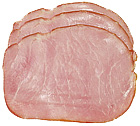

Упоминания о ветчине, которая использовалась в приготовлении множества блюд, встречаются в китайских текстах, предшествующих Империи Сун (X-XIII вв.) Несколько типов ветчины были описаны во время Династии Цин (XVII-XX вв.), где она использовалась, кроме всего прочего, для приготовлении так называемых "азиатских супов".Ветчина - просоленный и прокопченный свиной окорок, задняя или реже передняя лопатка свинины, ребрышки. Так же ветчина бывает медвежья, оленья, из индейки, курицы и пр.
Ветчину которая лежит на прилавках магазинов, зачастую получают следующим образом.
В процессе жиловки из тазобедренной, плечелопаточной и спинно-поясничной частей или из блоков жилованного или нежилованного мяса выделяют говядину жилованную с массовой долей соединительной и жировой тканей не более 3% и выделяют говядину жилованную с массовой долей соединительной и жировой ткани не более 20%.
Затем говядину измельчают, причем говядину жилованную с массовой долей
соединительной и жировой ткани не более 3% измельчают
на приемном ноже куски массой от 0,02 до 0,04 кг, а
говядину жилованную с массовой долей соединительной
и жировой ткани не более 20% измельчают на волчке с
диаметром отверстий 2 3 мм. Измельченное сырье подвергают
посолу. Мясо перемешивают в мешалках различных конструкций
с добавлением соли и нитрита натрия.
Посоленное сырье выдерживают не менее 6 ч. Соевую муку гидратируют водой предварительно или непосредственно в емкостях при массировании фарша для ветчины. Массирование проводят на любом известном для этих целей оборудовании. Далее проводят шприцевание сырья в оболочку или в повиденовые пакеты, вложенные внутрь металлических форм.
Термическую обработку ветчины проводят в стационарных обжарочных и варочных камерах. После тепловой обработки готовый продукт охлаждают.
Полезные свойства ветчины Ветчину нельзя назвать полезным продуктом, но ее неповторимый вкус заставит забыть об этом самого страстного приверженца здоровой пищи. Ветчина вызывает аппетит и является сытным и каллорийным блюдом, часто украшая праздничный стол.Употребление копченых и вяленых мясных продуктов способствует развитию хронических обструктивных болезней легких (ХОБЛ), установили американские ученые. По их данным, любители бекона, ветчины, сырокопченых колбас и сосисок намного чаще страдают хроническим бронхитом и эмфиземой.
Ученые из Колумбийского университета проанализировали данные 7352 человек, средний возраст которых составлял 64,5 года. Все участники исследования ответили на вопросы анкеты, касавшиеся их пищевого рациона.
Выяснилось, что у людей, употреблявших мясопродукты 14 и более раз в месяц, ХОБЛ развивались на 78% чаще, чем у тех, кто их не употреблял. Если мясные продукты присутствовали в рационе 5-13 раз в месяц, вероятность развития ХОБЛ увеличивалась на 50%, сообщил руководитель исследования Жуй Цзян (Rui Jiang).
«Мясные продукты содержат высокие концентрации нитритов, которые добавляются к мясу в качестве консерванта, антимикробного средства или фиксатора цвета. Нитриты могут вызывать повреждение легких», — заявил Цзян.